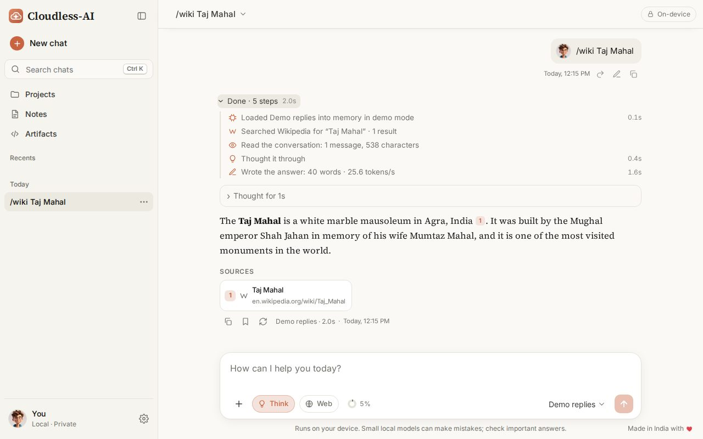
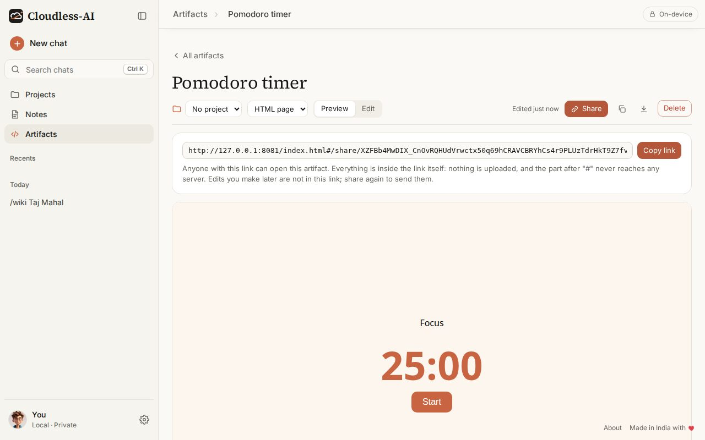

Chat like Claude
Streaming replies with Markdown, tables and highlighted code. Copy, retry, edit and resend any message; every message shows its date and time.
Free · Open source (MIT) · Runs on your device
Cloudless-AI is a free, open-source AI chat app that runs open language models such as Qwen3, Llama 3.2 and Gemma directly in your web browser, on your own CPU or GPU. There is no server, no account and no API key: your chats, projects, notes and artifacts are stored only in your browser.
Open Cloudless-AI Source code on GitHub

Streaming replies with Markdown, tables and highlighted code. Copy, retry, edit and resend any message; every message shows its date and time.
While a reply is made you see what is really happening: loading the model, reading project files, searching the web, reading the conversation, thinking and writing, each with its real time and the speed in tokens per second.
Attach a PDF and the text inside it is read in your browser with pdf.js, then given to the model. The PDF also opens next to the chat. Scanned PDFs, which are only pictures, can't be read yet.
Group chats, notes and artifacts. Give a project its own instructions and knowledge files, and every chat inside it uses them.
Keep HTML pages, SVG images, Markdown documents and code files as artifacts. Share one as a link that carries the whole artifact inside it, so no server is needed.
Let a chat look things up on Wikipedia, DuckDuckGo or any web page (through Jina Reader). All off by default; replies cite their sources as numbered links.
Reasoning models such as Qwen3 can think before they answer. Turn it on for careful answers or off for fast ones.
A web page in a reply opens in a side panel and runs there, sandboxed and offline, with Preview and Code tabs.
A meter shows how full the model's memory is. The context window goes from 4K tokens up to 32K where the model and your RAM allow it.

| Mode | Models | Download size | Needs |
|---|---|---|---|
| CPU (default) | Qwen3 1.7B (recommended), Qwen3 0.6B, Qwen2.5 1.5B, Qwen2.5 Coder 1.5B, Llama 3.2 1B and 3B, Gemma 3 1B, SmolLM2 1.7B, Phi-3.5 mini | 0.4 to 1.7 GB | Any modern browser |
| GPU | Qwen2.5 1.5B, Qwen3 1.7B, Llama 3.2 3B, Phi-3.5 mini, Gemma 2 2B, Llama 3.1 8B | 1.6 to 5 GB of GPU memory | A browser with WebGPU |
Small models make mistakes more often than large ones. Cloudless-AI says so under the message box, and its web tools can add sources to an answer.
The model runs inside your browser tab, so what you type is never sent to an AI company. The network is used only to:
/wiki. The line under the message box says exactly where your question goes.A shared artifact link carries the artifact after the #, the part of a link browsers never send to a server. "Delete all data" in Settings removes every chat, project, note, artifact and downloaded model.
| Cloudless-AI | ChatGPT, Claude.ai | Ollama + Open WebUI, LM Studio | |
|---|---|---|---|
| Where the model runs | Your browser tab | Their servers | An app on your computer |
| Install | None, open a link | None | Install and run a local server |
| Account or key | None | Account required | None |
| Model size | Small (0.5 to 8B) | The largest models | Anything your hardware can run |
| Cost | Free, MIT | Free tiers, paid plans | Free |
Cloudless-AI is a free, open-source (MIT) AI chat app that runs open language models such as Qwen3, Llama 3.2 and Gemma directly in your web browser, on your own CPU or GPU. There is no server, no account and no API key.
No. The model runs inside your browser tab, and chats, projects, notes and artifacts are saved in your browser's IndexedDB. The network is only used to load the app, to download a model once, and for web tools you turn on yourself.
No. CPU mode runs small open models (0.4 to 1.7 GB) with WebAssembly on any computer with a modern browser. GPU mode uses WebGPU for faster replies where the browser supports it. No API key or account is needed.
On the CPU: Qwen3 1.7B and 0.6B, Qwen2.5 1.5B, Qwen2.5 Coder 1.5B, Llama 3.2 1B and 3B, Gemma 3 1B, SmolLM2 1.7B and Phi-3.5 mini. On the GPU: Qwen2.5 1.5B, Qwen3 1.7B, Llama 3.2 3B, Phi-3.5 mini, Gemma 2 2B and Llama 3.1 8B.
Yes. After the first visit and the first model download, the model is cached in the browser and chats work with the network off.
The whole artifact (an HTML page, SVG image, Markdown document or code file) is compressed into the link itself, after the # sign. Browsers never send that part of a link to a server, so the content only goes where you send the link, and it is unpacked in the other person's browser.
ChatGPT and Claude.ai run very large models on their own servers and need an account. Cloudless-AI runs small open models (0.4 to 5 GB) on your own device, so it is free and private, but its answers are simpler and slower than those of the largest models.
Yes. It is free to use and its code is open source under the MIT license, on GitHub at github.com/lokendra-builds/Cloudless-AI.
wllama and llama.cpp for CPU inference, WebLLM for GPU inference, coi-serviceworker, pdf.js for reading PDFs, and the Source Serif 4 and Inter fonts. Model weights come from their authors on Hugging Face under their own licenses.